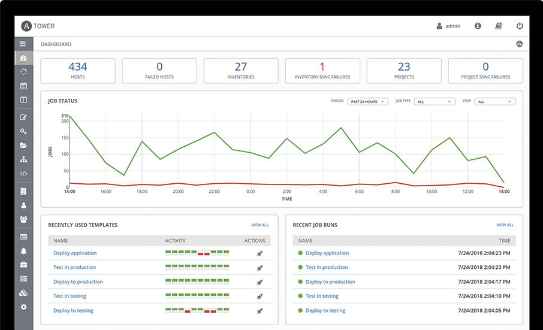
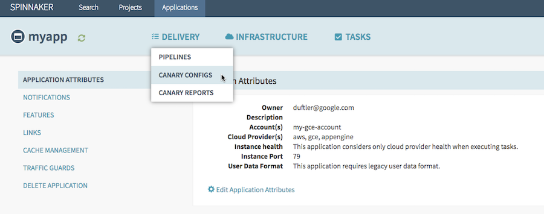

- 00 开篇词 量身定制你的持续交付体系.md
- 01 持续交付到底有什么价值？.md
- 02 影响持续交付的因素有哪些？.md
- 03 持续交付和DevOps是一对好基友.md
- 04 一切的源头，代码分支策略的选择.md
- 05 手把手教你依赖管理.md
- 06 代码回滚，你真的理解吗？.md
- 07 “两个披萨”团队的代码管理实际案例.md
- 08 测试环境要多少？从现实需求说起.md
- 09 测试环境要多少？从成本与效率说起.md
- 10 让环境自己说话，论环境自描述的重要性.md
- 11 “配置”是把双刃剑，带你了解各种配置方法.md
- 12 极限挑战，如何做到分钟级搭建环境？.md
- 13 容器技术真的是环境管理的救星吗？.md
- 14 如何做到构建的提速，再提速！.md
- 15 构建检测，无规矩不成方圆.md
- 16 构建资源的弹性伸缩.md
- 17 容器镜像构建的那些事儿.md
- 18 如何做好容器镜像的个性化及合规检查？.md
- 19 发布是持续交付的最后一公里.md
- 20 Immutable！任何变更都需要发布.md
- 21 发布系统一定要注意用户体验.md
- 22 发布系统的核心架构和功能设计.md
- 23 业务及系统架构对发布的影响.md
- 24 如何利用监控保障发布质量？.md
- 25 代码静态检查实践.md
- 26 越来越重要的破坏性测试.md
- 27 利用Mock与回放技术助力自动化回归.md
- 28 持续交付为什么要平台化设计？.md
- 29 计算资源也是交付的内容.md
- 30 持续交付中有哪些宝贵数据？.md
- 31 了解移动App的持续交付生命周期.md
- 32 细谈移动APP的交付流水线（pipeline）.md
- 33 进阶，如何进一步提升移动APP的交付效率？.md
- 34 快速构建持续交付系统（一）：需求分析.md
- 35 快速构建持续交付系统（二）：GitLab 解决代码管理问题.md
- 36 快速构建持续交付系统（三）：Jenkins 解决集成打包问题.md
- 37 快速构建持续交付系统（四）：Ansible 解决自动部署问题.md
- 持续交付专栏特别放送 答疑解惑.md
- 持续交付专栏特别放送 高效学习指南.md
- 结束语 越痛苦的事，越要经常做.md
37 快速构建持续交付系统（四）：Ansible 解决自动部署问题
今天这篇文章，已经是实践案例系列的最后一篇了。在《快速构建持续交付系统（二）：GitLab 解决配置管理问题》和《快速构建持续交付系统（三）：Jenkins 解决集成打包问题》这两篇文章中，我们已经分别基于GitLab搭建了代码管理平台、基于Jenkins搭建了集成与编译系统，并解决了这两个平台之间的联动、配合问题，从而满足了在代码平台 push 代码时，驱动集成编译系统工作的需求。
算下来，我们已经通过前面这两篇文章，跑完了整个持续交付体系三分之二的路程，剩下的就是解决如何利用开源工具搭建发布平台完成代码发布，跑完持续交付最后一公里的问题了。
利用Ansible完成部署
Ansible 是一个自动化运维管理工具，支持Linux/Windows跨平台的配置管理，任务分发等操作，可以帮我们大大减少在变更环境时所花费的时间。
与其他三大主流的配置管理工具Chef、Puppet、Salt相比，Ansible最大的特点在于“agentless”，即无需在目标机器装安装agent进程，即可通过SSH或者PowerShell对一个环境中的集群进行中心化的管理。
所以，这个“agentless”特性，可以大大减少我们配置管理平台的学习成本，尤其适合于第一次尝试使用此类配置管理工具。
另外，利用Ansible，我们可以完成虚拟机的初始化，以及Tomcat Java程序的发布更新。
现在，我们就先看看如何在我们的机器上安装Ansible，以及如何用它来搭建我们的代码发布平台。这里，我们再一起回顾下，我在第34篇文章《快速构建持续交付系统（一）：需求分析》中提到的对发布系统的需求：
同时支持 Jar、War、Docker的生产发布，以及统一的部署标准。
对于移动App，我们只要发布到内部测试集市即可，所以只需要在编译打包之后上传至指定地址，这个操作在Jenkins Pipeline里执行就可以了，所以本篇就不累述了。
Ansible安装
对于Ansible环境的准备，我推荐使用pip的方式安装。
sudo pip install Ansible
安装完之后, 我们可以简单测试一下：
-
提交一个Ansible的Inventory文件 hosts，该文件代表要管理的目标对象：
$ cat hosts [Jenkinsservers] 10.1.77.79
-
打通本机和测试机的SSH访问：
$ ssh-copy-id [email protected]
-
尝试远程访问主机 10.1.77.79：
$ Ansible -i hosts all -u deployer -a "cat /etc/hosts”
10.1.77.79 | SUCCESS | rc=0 >> 127.0.0.1 localhost localhost.localdomain localhost4 localhost4.localdomain4 ::1 localhost localhost.localdomain localhost6 localhost6.localdomain6
如果返回SUCCESS，则表示我们已经可以通过Ansible管理该主机了。
接下来，我们再看一下如何使用Ansible达到我们的发布目标吧。
Ansible使用
现在，我先简单介绍下，在初次接触Ansible时，你应该掌握的两个最关键的概念：Inventory和PlayBook。
- Inventory
对于被Ansible管理的机器清单，我们可以通过Inventory文件，分组管理其中一些集群的机器列表分组，并为其设置不同变量。
比如，我们可以通过Ansible_user ，指定不同机器的Ansible用户。
[Jenkinsservers]
10.1.77.79 Ansible_user=root
10.1.77.80 Ansible_user=deployer
[Gitlabservers]
10.1.77.77
- PlayBook
PlayBook是Ansible的脚本文件，使用YAML语言编写，包含需要远程执行的核心命令、定义任务具体内容，等等。
我们一起看一个Ansible官方提供的一个例子吧。
---
- hosts: webservers
remote_user: root
tasks:
- name: ensure apache is at the latest version
yum:
name: httpd
state: latest
- name: write the apache config file
template:
src: /srv/httpd.j2
dest: /etc/httpd.conf
- hosts: databases
remote_user: root
tasks:
- name: ensure postgresql is at the latest version
yum:
name: postgresql
state: latest
- name: ensure that postgresql is started
service:
name: postgresql
state: started
这段代码的最主要功能是，使用yum完成了Apache服务器和PostgreSQL的安装。其中，包含了编写Ansible PlayBook的三个常用模块。
-
yum 调用目标机器上的包管理工具完成软件安装 。Ansible对于不同的Linux操作系统包管理进行了封装，在CentOS上相当于yum， 在Ubuntu上相当于APT。
-
Template 远程文件渲染，可以把本地机器的文件模板渲染后放到远程主机上。
-
Service 服务管理，同样封装了不同Linux操作系统实际执行的Service命令。
通常情况下，我们用脚本的方式使用Ansible，只要使用好Inventory和PlayBook这两个组件就可以了，即：使用PlayBook编写Ansible脚本，然后用Inventory维护好需要管理的机器列表。这样，就能解决90%以上使用Ansible的需求。
但如果你有一些更复杂的需求，比如通过代码调用Ansible，可能还要用到API组件。感兴趣的话，你可以参考Ansible的官方文档。
使用Ansible进行Java应用部署
我先来整理下，针对Java后端服务部署的需求：
完成Ansible的PlayBook后，在Jenkins Pipeline中调用相关的脚本，从而完成Java Tomcat应用的发布。
首先，在目标机器上安装Tomcat，并初始化。
我们可以通过编写Ansible PlayBook完成这个操作。一个最简单的Tomcat初始化脚本只要十几行代码，但是如果我们要对Tomcat进行更复杂的配置，比如修改Tomcat的CATALINA_OPTS参数，工作量就相当大了，而且还容易出错。
在这种情况下，一个更简单的做法是，使用开源第三方的PlayBook的复用文件roles。你可以访问https://galaxy.Ansible.com ，这里有数千个第三方的roles可供使用。
在GitHub上搜索一下Ansible-Tomcat，并下载，就可以很方便地使用了。
这里，我和你一起看一个具体roles的例子：
---
- hosts: Tomcat_server
roles:
- { role: Ansible-Tomcat }
你只需要这简单的三行代码，就可以完成Tomcat的安装，以及服务注册。与此同时，你只要添加Tomcat_default_catalina_opts参数，就可以修改CATALINA_OPTS了。
这样一来，Java应用所需要的Web容器就部署好了。
然后，部署具体的业务代码。
这个过程就是指，把编译完后的War包推送到目标机器上的指定目录下，供Tomcat加载。
完成这个需求，我们只需要通过Ansible的SCP模块把War包从Jenkins推送到目标机器上即可。
具体的命令如下：
- name: Copy a war file to the remote machine
copy:
src: /tmp/waimai-service.war
dest: /opt/Tomcat/webapps/waimai-service.war
但是，这样编写Ansible的方式会有一个问题，就是把Ansible的发布过程和Jenkins的编译耦合了起来。
而在上一篇文章《快速构建持续交付系统（三）：Jenkins 解决集成打包问题》中，我提到，要在编译之后，把构建产物统一上传到Nexus或者Artifactory之类的构建产物仓库中。
所以，此时更好的做法是直接在部署本地从仓库下载War包。这样，之后我们有独立部署或者回滚的需求时，也可以通过在Ansible的脚本中选择版本实现。当然，此处你仍旧可以使用Ansible的SCP模块复制War包，只不过是换成了在部署机上执行而已。
最后，重启 Tomcat 服务，整个应用的部署过程就完成了。
Ansible Tower 简介
通过上面的几个步骤，我们已经使用Ansible脚本简单实现了Tomcat War包分发的过程。
这样的持续交付工作流，虽然可以工作，但依然存在两个问题。
-
用户体验问题。- 我们一起回顾下第21篇文章《发布系统一定要注意用户体验》中的相关内容，用户体验对发布系统来说是相当重要的。- 在上面使用Ansible进行部署Java应用的方案中，我们采用的Jenkins Pipeline和Ansible命令行直接集成的方式，就所有的信息都集中到了Jenkins的console log下面，从而缺少了对发布状态、异常日志的直观展示，整个发布体验很糟糕。
-
统一管理问题。- Ansible缺乏集中式管理，需要在每个Jenkins节点上进行Ansible的初始化，增加了管理成本。
而这两个问题，我们都可以通过Ansible Tower解决。

图1 Ansible Dashboard（ 来源 Ansible 官网）
Ansible Tower是Ansible的中心化管理节点，既提供了Web页面以达到可视化能力，也提供了Rest API以达到调用Ansible的PlayBook的目的。
如图1所示为Ansible Tower的Dashboard页面。我们可以看到，这个页面提供了整个Ansible集群发布的趋势图，以及每次发布在每台被部署机器上的详细结果。
灰度发布的处理
通过上面的内容，我们已经可以通过合理使用Ansible，顺利地部署一个Java应用了，而且还可以通过Ansible Tower监控整个发布过程。而对于灰度发布过程的处理，你只需要在Jenkins Pipeline中编写相应的脚本，控制具体的发布过程就可以了。
比如，通过Inventory定义灰度分批策略，再利用Pipeline驱动PlayBook，就是一个典型的灰度发布的处理过程。其实，这只是将原子化的单机操作批量化了而已。
当然，这个过程中我们还需要考虑其他一些问题。而对于这些问题如何解决，你就可以参考发布及监控系列的六篇文章（即，第19篇至第24篇）了。
至此，标准的Java应用的发布就已经大功告成了。接下来，我再和你说说其他产物（Jar包、Docker镜像）的发布方式。
Jar包的发布
Jar包的发布本身就比较简单，执行一条Maven命令（即，mvn deploy）就可以完成。但，Jar包发布的关键在于，如何通过工具提升Jar包发布的质量。
在不引入任何工具和流程辅助时，我们在携程尝试过让开发人员自行通过“mvn deploy”进行发布。但结果可想而知，造成了很多问题。诸如，大量低质量的代码进入仓库；release版本的Jar包被多次覆盖；版本管理混乱，Bug难以排查等等。
后来，我们初次收紧了发布权限，也就是只把“mvn deploy”的权限下放给每个团队的技术经理（tech leader）。这种方案，虽然在一定程度上解决了Jar包质量的问题，但同时也降低了发布效率。这里发布效率的降低，主要体现在两个方面：
- 一方面，每次发布都需要经过技术经理，增加了他的工作负担；
- 另一方面，“mvn deploy”权限需要由SCM人员手工完成，增加了发布的沟通成本，降低了整个团队的开发效率。
再后来，为了解决这些问题，我们在GitLab上进行了二次开发，即：允许开发人员自主选择某个pom module的Jar包进行发布，并记录下每次的Jar包发布的记录。
在Jar包发布的第一步，我们使用Maven Enforcer插件进行构建检测，以保证所有进入仓库的Jar包是合规的。这部分内容，你可以参考第15篇文章《构建检测，无规矩不成方圆》。
如果你不想通过在GitLab上进行二次开发控制Jar包发布的话，简单的做法是，通过Jenkins任务，参数化创建一个Jar包发布的job。让用户在每次发布前填入所需的代码仓库和module名，并在job的逻辑中保证Jar包编译时已经通过了Enforcer检查。
这样，我们就可以顺利解决掉Jar包发布的问题了。
使用Spinnaker处理Docker
现在，我们再来看一下如何选择开源的Docker交付平台。
在携程，我们第一版的Docker发布流程，是基于自研发布工具Tars和mesos framework集成实现的。这个方案成型于2016年底，那时容器编排平台的局面还是Mesos、Swarm,，以及Kubernetes的三方大战，三方各有优势和支持者。
时至今日，Kubernetes基本已经一统容器编排平台。为了更多地获取开源红利，携程也在向Kubernetes的全面迁移中。
目前，携程对接Kubernetes的方案是，使用StatefulSet管理Pod，并且保持实例的IP不会因为发布而产生变化，而负载均衡器依然使用之前的SLB中间件，并未使用Kubernetes天然支持的Ingress。这和我在第23篇文章《业务及系统机构对发布的影响》中提到的markdown、markup机制有关系，你可以再回顾一下这篇文章的内容。
但，如果今天让我再重新实现一次的话，我更推荐使用Kubernetes原生方案作为Docker编排平台的第一方案，这样更简单有效。如果你还没有在持续交付平台中支持Kubernetes的话，我的建议是：直接考虑搭建持续交付平台Spinnaker。
Spinnaker 是 Netflix 的开源项目，致力于解除持续交付平台和云平台之间的耦合。这个持续交付平台的优点，主要包括：
-
发布支持多个云平台，比如AWS EC2、Microsoft Azure、Kubernetes等。如果你未来有在多数据中心使用混合云的打算，Spinnaker可以给你提供很多帮助。
-
支持集成多个持续集成平台，包括Jenkins、Travis CI等。
-
Netflix 是金丝雀发布的早期实践者，Spinnaker中已经天然集成了蓝绿发布和金丝雀发布这两种发布策略，减少了开发发布系统的工作量。 在此，你可以回顾一下我在第19篇文章《发布是持续交付的最后一公里》中，和你分享的蓝绿发布和金丝雀发布。

图2 Spinnaker 金丝雀发布配置图（来源 Spinnaker 官网）
虽然，我并未在携程的生产环境中使用过Spinnaker，但由处于持续交付领域领头羊地位的Netflix出品，并且在国内也已经有了小红书的成功案例，Spinnaker还是值得信任的。你可以放心大胆的用到自己的持续交付体系中。
好了，现在我们已经一起完成了发布平台的搭建。至此，整个持续交付体系，从代码管理到集成编译再到程序发布上线的完整过程，就算是顺利完成了。
总结与实践
在今天这篇文章中，我主要基于Ansible系统的能力，和你分享了搭建一套部署系统的过程。在搭建过程中，你最需要关注的两部分内容是：
-
利用Inventory做好部署目标的管理；
-
利用PlayBook编写部署过程的具体逻辑。
同时，我还介绍了Ansible Tower这样一个可视化工具，可以帮助你更好地管理整个部署过程。
另外，对于Jar包的发布，以及Docker的处理，我也结合着携程的经验，和你分享了一些方法和建议，希望可以帮到你。
至此，我们要搭建的整个持续交付系统，也算是顺利完成了。
同样地，最后我还是建议你动手去搭建一套发布系统，看看是否能够顺利地完成这个过程。如果你在这个过程中碰到了任何问题，欢迎你给我留言一起讨论。-
© 2019 - 2023 Liangliang Lee. Powered by Vert.x and hexo-theme-book.